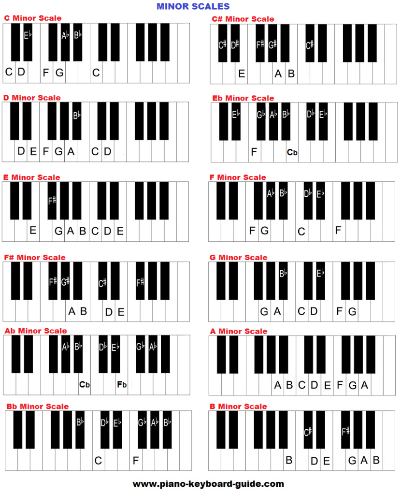

As opposed to major chords, minor chords have a more gloomy and sad sound to them. This is, again, just a general guideline though, as minor chords can be used to convey many types of emotions.
According to Scales-chords.com, minor chords are created by taking the root note and adding the minor third, then the perfect fifth. Using C minor as an example, it would be the root note of C, up 3 semitones to D#, and then up 4 to G (or up 3 semitones from the root, and then up 7 semitones from the root). This is the opposite of major where you would move up 4 and then 3.